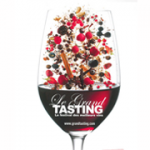

Ficha do filme
Uma edição em 14 filmes
A página original do RENDEZVOUS reunia a programação em vídeo. O festival abre com uma apresentação e um guia, antes de passar por Champagne, Bordeaux e Borgonha em conversas com quem faz os vinhos.
